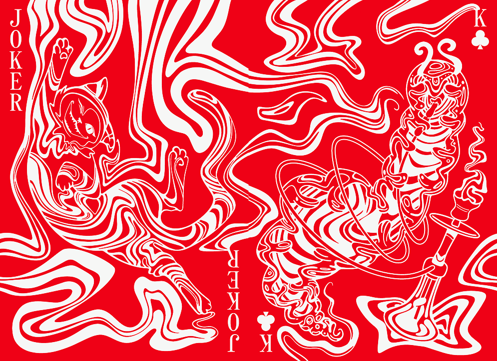
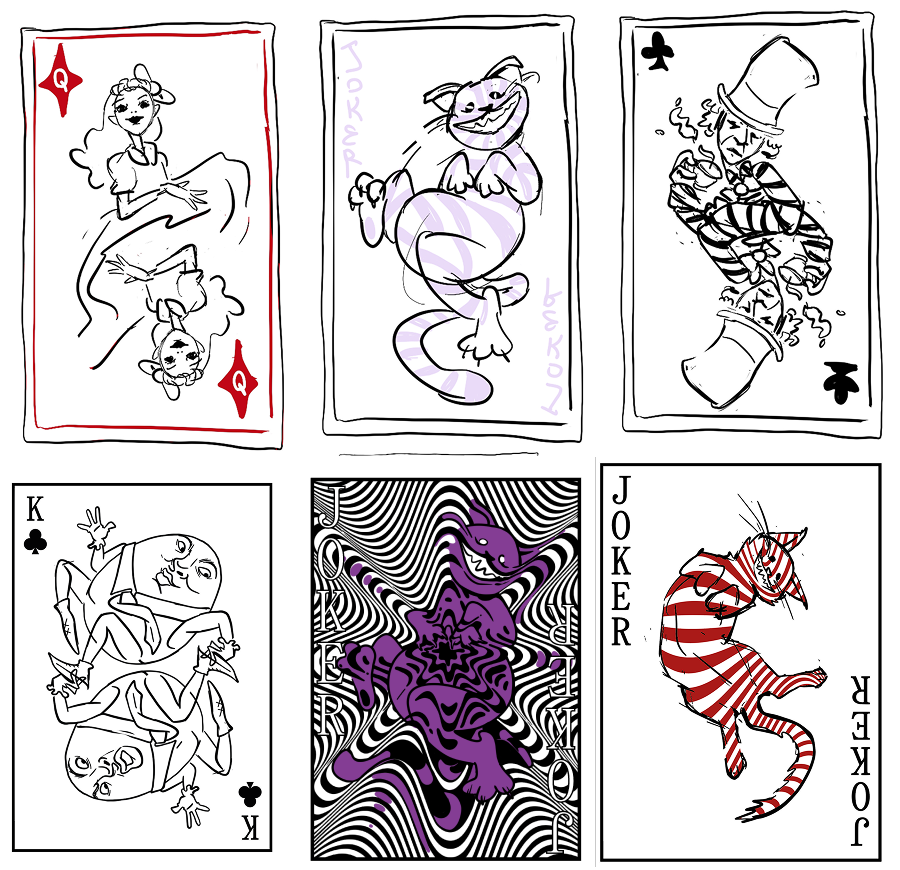
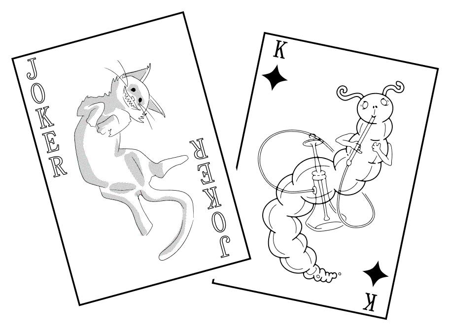
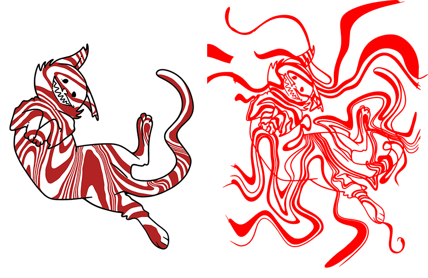
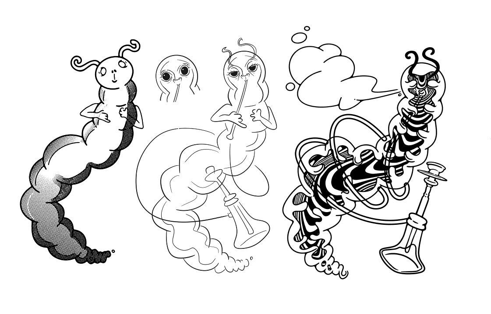
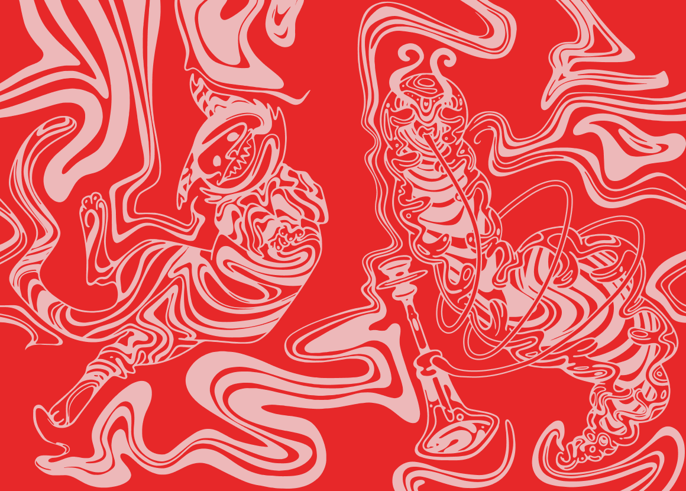
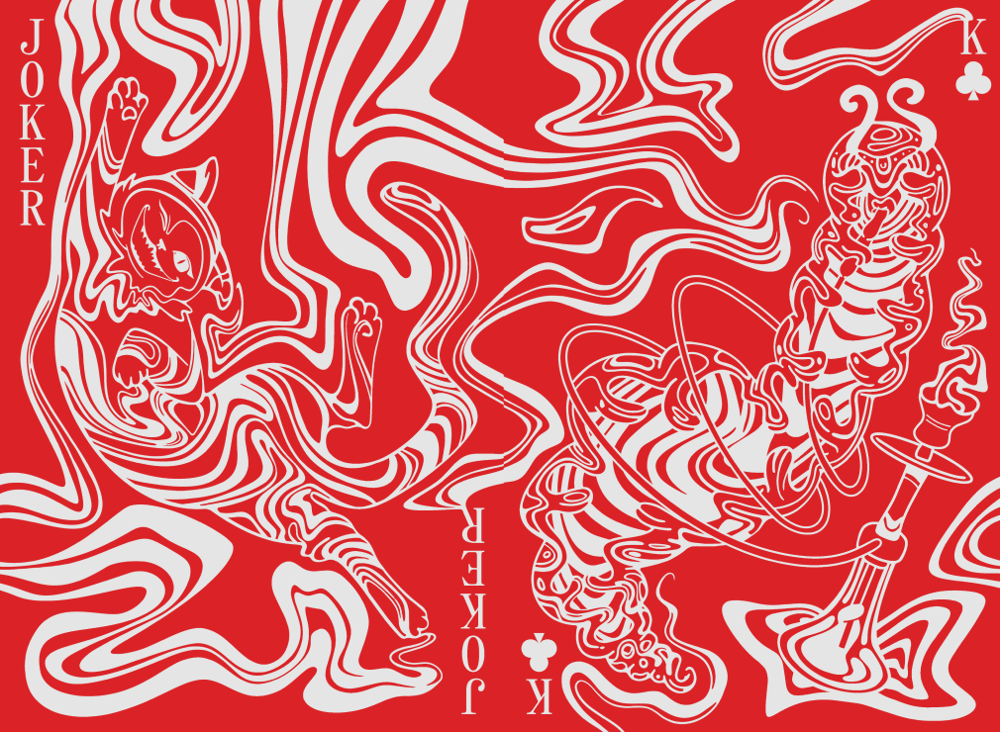
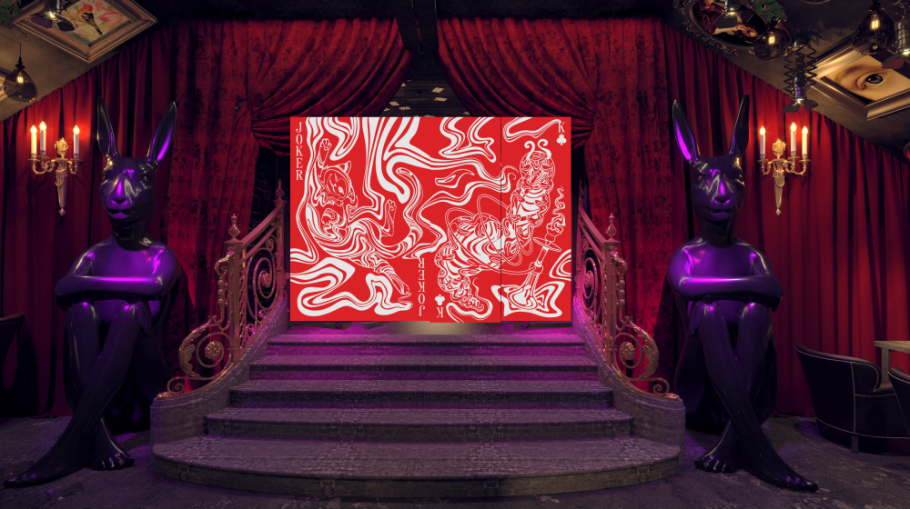

Это перегородка для VIP зоны в ресторане-кальянной в стиле сказок Льюиса Кэрролла.

Условие было одно — рисунок игральных карт. Я предложила иллюстрации героев

Остановились на чеширском коте и гусенице

Полосы кота превратились в узор

А у гусеницы я перерисовала лицо

Орнамент на ширмах соединяется с обоих сторон

Законченый рисунок и визуализация

